Operating Documentation
Direction 5134894-800, Rev# 9
GOC4 Upgrade Installation & Service Information
Operating Documentation |
| Required Persons | Preliminary Reqs | Procedure | Finalization |
|---|---|---|---|
| 1 |
This module contains the following sections:
| Last Revised: | 8 August, 2005 |
Route the keyboard cable under the SCIM, as shown in Illustration 1.
Illustration 1: SCIM control with keyboard cable routed through SCIM
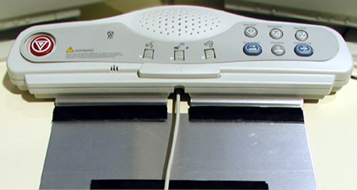
| Potential for equipment damage. Never connect a mouse or keyboard with the host computer powered “ON”. Doing so can destroy components within the host computer. | |
The keyboard and mouse connect to the ports on the top of the console rear bulkhead. The keyboard connects to the port on the right, the mouse connects to the left port ( Illustration 2).
Illustration 2: Ports on rear of Console
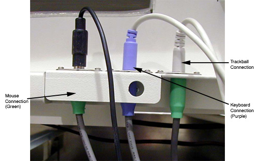
Connect the SCIM cable to the SCIM as shown in Illustration 3 (note the cable routing).
| NOTE: | Make sure the SCIM connector fits snug. Some molding may need to be removed to allow the cable to fit snug. |
Illustration 3: SCIM bottom, showing cables and keyboard mounting bracket
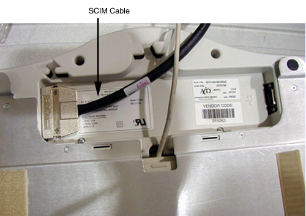
Select and install the proper overlay for your system: (1) with Tilt or (2) without tilt.
| NOTE: | LightSpeed 1.X Systems must use overlay (2) without tilt. |
Verify that none of the buttons get caught and stuck under the overlay. Pay close attention to the prescribed tilt button on systems with the tilt feature.
The keyboard should attach to the SCIM using the supplied Velcro strip and fit snugly against the SCIM when finished, as shown in Illustration 4.
Illustration 4: SCIM connected to the keyboard with the US English tilt overlay installed
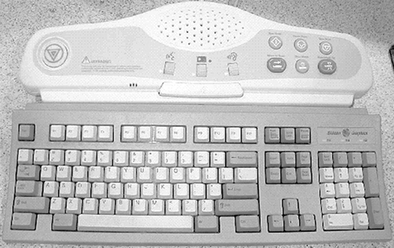
Connect the SCSI cable to the rear of the SCSI tower.
| NOTE: | The cable is included in the SCSI Cable Kit and is the same as the DASM cable. |
Connect the SCSI terminator to the rear of the SCSI tower. See Illustration 5.
Illustration 5: SCSI Tower Connections

Connect the power cable to the rear of the SCSI tower.
Illustration 6: SCSI Tower Optional Seismic Mounting Bracket
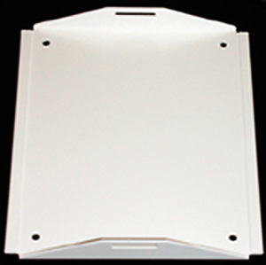
With the monitor and computer switched off, connect the video signal cable to the monitor’s video input (see Figure 7).
| Equipment Damage Possible. Do not touch the video signal cable connector pins as this might bend them. When connecting the video signal cable, check the alignment of the HD15 connector. Do not force the connector in the wrong way, or the pins might bend. | |
Connect the power cord to the monitor, then connect it to console power panel outlet J1 or J7.
Illustration 7: Monitor Connections (Sony Model GMD-F520 - GE #2333243)
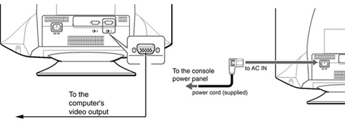
| NOTE: | Console power is single phase power. Outlet assigned is not critical. |
Connect the console power cable to the console power panel. You may need to install the shipped power cable (120 VAC) if your power cable is a 240 VAC cable.
Connect console component power cords as listed in Table 1. (“J numbers” increment from top to bottom and left to right.
Table 1: Suggested Power Panel Outlet Assignments
| J# | Device | J# | Device |
| J1 | Video Splitter | J9 | Host Computer |
| J2 | Remote Monitor | J10 | Power Monitor |
| J3 | Modem | J11 | DARC |
| J4 | IG3 | J12 | Power Monitor |
| J5 | IG1 | J13 | |
| J6 | IG2 | J14 | Power Media Conv |
| J7 | SDDA | J15 | Left Fans |
| J8 | DASM | J16 | Right Fans |
Illustration 8: Power Connections
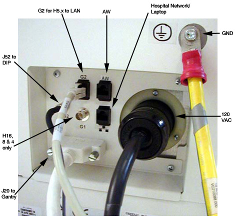
| NOTE: | Do NOT use the AW Port on the GRE for AW Connection. AW is connected via the Hospital Network. |
If you have a digital DASM to install, complete the following steps to connect it to the computer.
Turn the DASM over so you are looking at the bottom.
Set the DASM SCSI ID to 1.
Set the DASM termination to ON.
Illustration 9: DASM Bottom
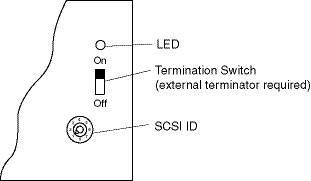
Set the RS232/RS422 switch to the RS232 position for a digital DASM.
Refer to Illustration 10. Attach the SCSI cable supplied with DASM kit to the back of the DASM.
Illustration 10: Rear view of HP xw800, showing DASM SCSI cable connection
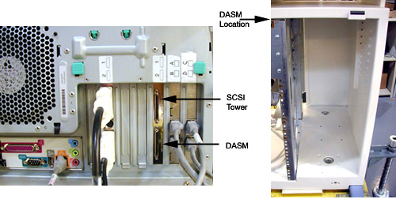
Attach the free end of the SCSI cable to the rear of the Host Computer (see Illustration 10).
Plug DASM power cord into J10 (or any open slot).
Attach remaining cable(s) from camera to DASM and install the DASM to the right of the slide-out tray.
If you have a modem to install, do it now.
Place the modem on top of the outlet box and attach it with velcro to the power supply.
Hook up the power, phone, and serial line, as shown in drawing 2378862. The drawing is located in the back cover of the console (For the pdf version of the schematics, click on the pdf icon in GRE Operator Console Interconnect, Step 2).
Illustration 11: Modem
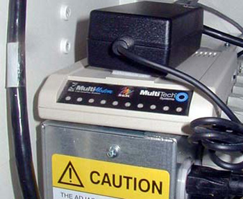
Power Cable and Supply: Connect to any open AC jack in the console.
Phone Line: Connect to the Hospital Phone line.
Serial Cable: Connect to the HP rear Serial Port.
(Refer to drawing 2378862SCH, located in the back cover of the console.)
Install black BNC LAN cable (2266887) onto G1 of rear bulkhead on console.
| NOTE: | G2 for LightSpeed Pro16, LightSpeed Ultra, and LightSpeed Plus. |
Illustration 12: LAN Connection

| NOTE: | Cable storage is not allowed behind the console, PDU, or the gantry. |
Power cable termination should be used as a last result. A single-phase GRE cable is shipped with the console.
Carefully remove the power plug and record the color of the wires in Table 2. The terminals are labelled X, W and G on the plug.
Table 2: Console Power Cable Termination
| Terminal | X | W | G |
| Description | Hot | Neutral | Ground |
| Color |
Cut the cable to desired length and dress ends.
Re-install the power plug, according to the orientations recorded in Table 2.
Verify that less than 1 ohm of resistance exists between the following connections:
Table 3: Resistance Verification Points
| FROM PDU PLUG | TO CONSOLE PLUG END |
| CB1 -11 (Black) (J5 Phase X (Brown) | Phase X (Brown) |
| A3 Neutral Bus Bar (Blue) (J5 -13 Phase W) | Phase W (Blue) Neutral |
| A3 Ground Bus Bar (J5 -22 Ground Green) | Ground (Green) Ground Green screw |
GRE Module Locations:
Illustration 13: GRE Module Locations
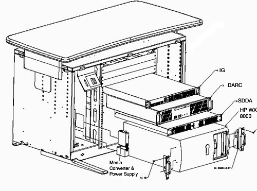
GRE Interconnect:
Media File 1: GRE Interconnect

No finalization required.